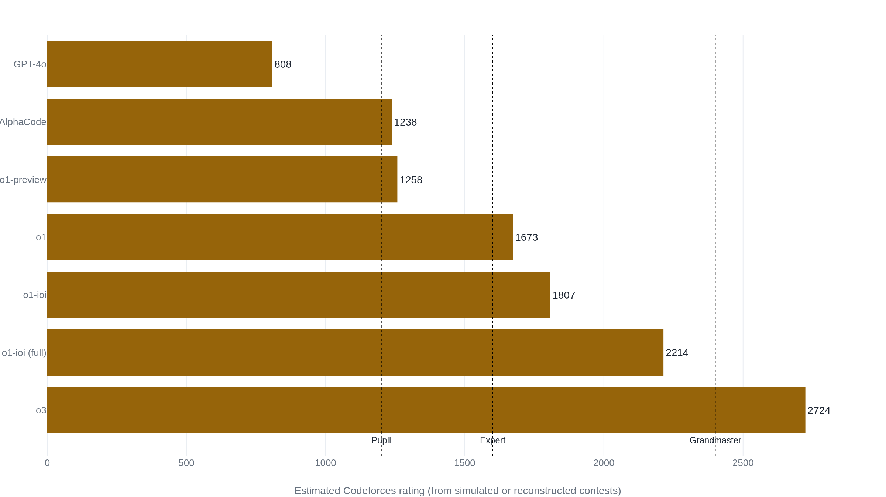

The same model scored 1673 or 2214 on Codeforces, depending on the scaffolding
OpenAI's own paper reports that gap, and every other AI Codeforces figure in circulation, up to o3's 2724, is the same kind of number: an estimate fit to contests the model never entered live.
Why this matters
When a lab wants to prove its newest model can write code, it often reaches for a Codeforces rating, a single number from the site that runs timed competitive-programming contests. The figure gets read as a rank against the world's best programmers. This lesson takes one of those numbers apart. You will learn how a Codeforces rating is built, what it actually measures, and what a claim like "o3 is the 175th best competitive programmer" really rests on. What it measures is a placing against whoever entered a given round. Read it and the next headline rating stops being a verdict and becomes a set of questions you know how to ask.
- 01
- Chatbot Arena's Elo is a preference vote that pays out for style: how Elo turns a game's outcome into a rating change, before this lesson stretches it to a whole contest.
- 02
- Hand-writing HumanEval's 164 problems solved contamination in 2021 and caused it by 2024: the pass@k idea, where a model gets many tries at a problem and only its best is scored.
A Codeforces rating is a placing against whoever entered
Codeforces runs timed programming contests, and after each rated round it updates a single number for every entrant. That number is the contestant's rating. It sorts a competitor into a color-coded tier and, lately, has been quoted to say how strong an AI system is at writing code. The site's founder defines the rating as a generalization of chess's Elo system to contests with many participants at once.1 Elo itself is its own lesson: a way to turn a game's outcome into a rating change, where beating a stronger opponent lifts your number more than beating a weaker one.
What Codeforces adds is a way to run that idea over a whole field at once. Before a round, the system computes each contestant's seed, the place it expects them to finish, by summing their probability of beating every other person who entered. Those probabilities come straight from the rating gaps. A 200-point edge means the higher-rated contestant places ahead with probability about 0.75; a 400-point edge, about 0.9.1 After the round the arithmetic is plain: finish ahead of your seed and your rating rises, finish behind it and your rating falls.
A rating is therefore a standing inside a field. It records where a contestant placed among the people who entered that round, on those problems, within that time limit. Change the field and the same performance yields a different number.
Turning the number into a title and a percentile
A bare rating is hard to feel, so Codeforces attaches names to ranges of it. In a 2013 post the founder laid out the color-coded titles, from Newbie at the bottom to Legendary Grandmaster at the top.2
| Title | Rating range |
|---|---|
| Newbie | 0 – 1199 |
| Pupil | 1200 – 1399 |
| Specialist | 1400 – 1599 |
| Expert | 1600 – 1899 |
| Candidate Master | 1900 – 2199 |
| Master | 2200 – 2299 |
| International Master | 2300 – 2399 |
| Grandmaster | 2400 – 2599 |
| International Grandmaster | 2600 – 2899 |
| Legendary Grandmaster | 2900 + |
Those cutoffs are not fixed for all time. Codeforces has pushed the top bands upward since that post, so the exact number that earns a top title depends on the year you ask. A rating quoted without its date is already a little loose.
The other way people read a rating is as a percentile. In a 2021 tabulation of the distribution, a contributor counted 99,832 players who had competed in the previous six months and lined each rating up against the fraction of that pool below it.3 That denominator is the part to hold onto. A percentile on Codeforces is a rank among recently active contestants, not among all programmers and not among all people. When a paper says a system beat 72% of users, those users are the ones who entered contests that season.
The AI ratings are estimates that move with the scaffolding
Now the numbers people actually quote. In 2022 DeepMind's AlphaCode entered ten recent Codeforces contests, each with more than 5,000 participants, and averaged a placing in the top 54.3%. From those placings the authors estimated a rating of 1238, which they put in the top 28% of recently active users.4 Read against the 2013 bands, 1238 is Pupil territory. The estimate rode on a specific procedure: the system generated up to roughly a million candidate programs per problem, then filtered and clustered them down to at most ten submissions, an average of 2.4 for each problem it solved.4 The rating is what a million tries, screened to ten, placed at.
OpenAI's 2025 paper reports a fuller ladder from its own simulated contests: GPT-4o at 808, o1-preview at 1258, o1 at 1673, and o3 at 2724, the 99.8th percentile.5 The sharpest comparison in that paper is inside a single model. The same base o1 reports 1673 on its own and 2214 once a hand-built test-time strategy, clustering and reranking its many attempts, the same trick AlphaCode used, is wrapped around it.5 One model, two ratings, 541 points apart, and the gap is the scaffolding. o3 then passed that 2214 without the hand-built strategy, its search learned during training rather than bolted on at the end.5

Every figure on that chart is an estimate, fit to the rankings a model produced under conditions its makers chose. None is a rating a system walked in and earned against a live field. That is not a scandal, but it is the qualifier that keeps getting dropped.
What actually-judged runs and contamination checks show
Two objections to these numbers are worth taking seriously, because each is half right. The first is that a rating fit to a paper's own contests never faced the real judge. For AlphaCode that is not quite true: the authors submitted their selected programs to the live Codeforces judge and read the actual standings, on contests that had already finished.4 The honest line is narrower. AlphaCode's submissions were graded for real; what is estimated is the rating derived from those placings, and the run was a retroactive entry into a closed contest rather than a live sitting against the clock with everyone else.
The second objection is contamination: a model may score well because the contest problems, or ones like them, sat in its training data. That worry is real for coding benchmarks in general, and one study went looking for it. LiveCodeBench dated its problems and checked whether models did worse on ones released after their training cutoff. For one model the drop was sharp, but it landed on LeetCode problems specifically; on Codeforces the same model's performance was smooth over time.6 The memorization signal that inflates other coding scores is, for the models tested, the one thing the Codeforces numbers come out clean on.
And when general-purpose models are run through real contests instead of a paper's simulation, the numbers come down. One team put ChatGPT, Gemini, and Meta AI into nine virtual contests judged by the real online judge. In the easier divisions the models beat 63% to 70% of participants; in the harder Division 1 and Division 2 rounds, where the high-rated humans compete, they did poorly.7 That was an older, non-reasoning generation of models, and it is exactly the kind of independent grading the headline ratings do not carry.
How 2724 became the 175th best programmer
OpenAI's paper gives o3 an estimated 2724, fit to the rankings in its simulated contests.5 When o3 was announced in December 2024, the coverage carried a flat 2727. VentureBeat reported that the model "achieves a Codeforces rating of 2727," and beats a specific person, OpenAI's own chief scientist.8 The report gives no hint that the number was estimated from simulated contests. The launch framing went further and called o3 on par with the 175th best competitive programmer in the world, a gloss that traces to the announcement and its retellings rather than to any document that owns it. The primary record is the paper, and it reports 2724.
The launch framing kept the number and dropped the two words that qualify it: estimated, and simulated. A rating fit to a lab's own reconstructed contests was read as a live human ranking, 175th on Earth, that no live contest ever produced.
The paper's 2724 is a real result under conditions it states. The "175th best programmer" reading is a claim about the live human field, and nothing in the paper makes it. Same for AlphaCode's 1238 and every bar on the chart: each is true about the contests it was measured in, and each says less than the round-number percentile suggests.
The takeaway
A Codeforces rating is an honest instrument for the job it was built for: ranking a contestant against the specific field that entered a round, on set problems, in a set time. It was never built to certify skill in the abstract, and no single figure survives being lifted out of its contest and its date. Every AI rating in circulation is an estimate laid over that instrument. It comes from contests the model did not enter live, under conditions its makers chose: how many attempts it got, what strategy reranked them, which season's field it was scored against. Those conditions swung the same o1 by 541 points. So when the next model is announced at the 99th percentile, or as the 175th best programmer alive, treat that figure as where the reading starts. Ask which contests, live or reconstructed, how many attempts per problem, and which season's field it was scored against. Those answers turn a headline percentile back into the placing it always was.
- 01
- Competitive Programming with Large Reasoning Models: OpenAI's own account of the o1 and o3 Codeforces ratings and the test-time strategies behind them.
- 02
- Competition-Level Code Generation with AlphaCode: DeepMind's full description of the million-sample procedure behind the 1238 estimate.
Sources
- Codeforces · Codeforces rating system
- Codeforces · Colors and titles
- EbTech · Codeforces rating distribution
- Li et al., DeepMind · Competition-Level Code Generation with AlphaCode
- OpenAI · Competitive Programming with Large Reasoning Models
- Jain et al. · LiveCodeBench: Holistic and Contamination Free Evaluation of Large Language Models for Code
- Billah et al., ESEM 2024 · Are Large Language Models a Threat to Programming Platforms?
- VentureBeat · OpenAI confirms new frontier models o3 and o3-mini